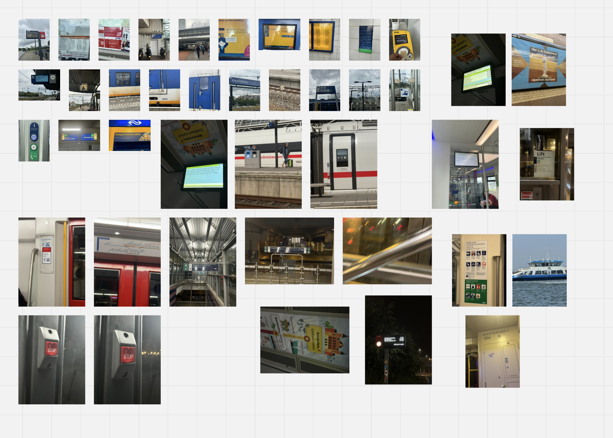
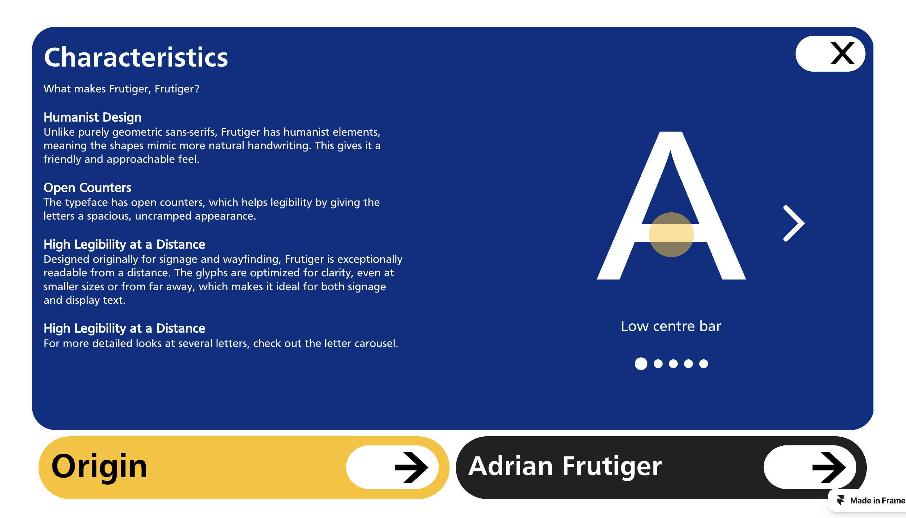
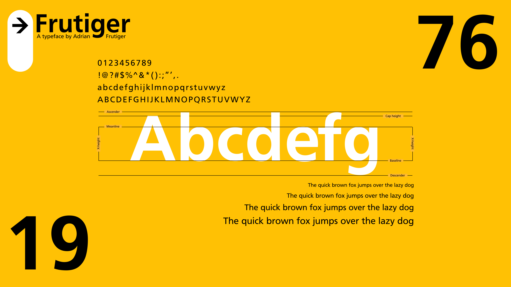
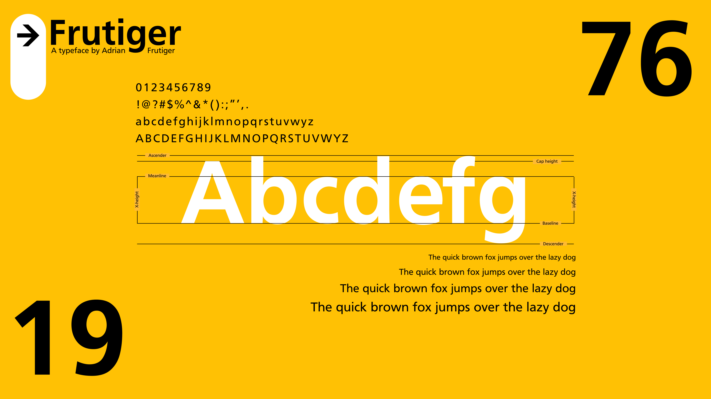

About the project
After thoroughly researching Frutiger and his font, it was time to put my knowledge to work and
create a website with fitting identity for the font, or well Show My Face.
Why Frutiger?
I've been a huge fan of public transport for the longest time, Especially trains. Which is why I
picked it as my topic for the photos. Frutiger is used by a lot of instances for its great
legibility while still having a open en inviting feel. It's a typeface originally made for the
Charles de Gaulle
The website
For the website I wanted to created a very simple and clean look, Representing the usage of the face.
For this I took elements usage in signage from Schiphol Airport (where they also used Frutiger) and
the colors from Nessie, The design system from NS. Combining this resulted in a fun but a still very
clean design showcasing the history and different aspects of the Frutiger Typeface.


 Go back

Go back
